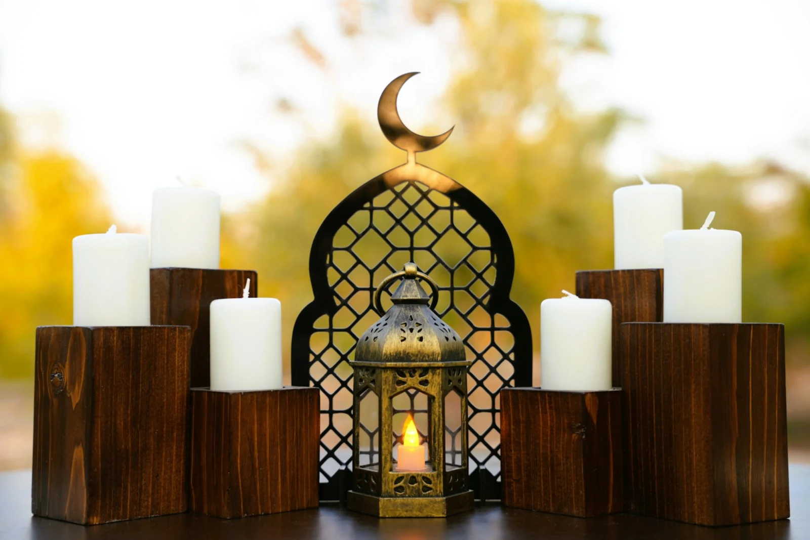

Nikah (marriage) services
Marriage is a sacred covenant and a sunnah of the Prophet Muhammad ﷺ. We help you begin it soundly — with an Imam who has known you before the day itself.
Photo: AmirHadi Manavi Moghadam / Unsplash
وَمِنْ آيَاتِهِ أَنْ خَلَقَ لَكُم مِّنْ أَنفُسِكُمْ أَزْوَاجًا لِّتَسْكُنُوا إِلَيْهَا وَجَعَلَ بَيْنَكُم مَّوَدَّةً وَرَحْمَةً
“And among His signs is that He created for you spouses from among yourselves, that you may find tranquillity in them; and He placed between you affection and mercy.”

From consultation to certificate
What we provide
-
Before the day
Pre-marital consultation
Sit with the Imam to cover the conditions of a sound Nikah, communication in marriage, and the rights and responsibilities each spouse owes the other.
-
The ceremony
The Nikah itself
Conducted at the masjid, or at another venue by arrangement — dignified, unhurried, and in accordance with Islamic requirements.
-
Legal
Civil registration
Ask us about civil registration of your marriage when you enquire, so both the Islamic and Australian legal sides are looked after.
-
Record
Nikah certificate
A certificate is provided for the couple as a record of the Nikah.
A valid Nikah has conditions set by Islam. If either party is not Muslim, or you are unsure whether your circumstances meet those conditions, please speak with the Imam first — he will explain, with kindness and in confidence, what Islam requires and what we are able to officiate.
Begin the arrangements
Enquire about your Nikah.
To enquire about a date, call (03) 8087 0900 or email admin@virginmarymosque.org.au.